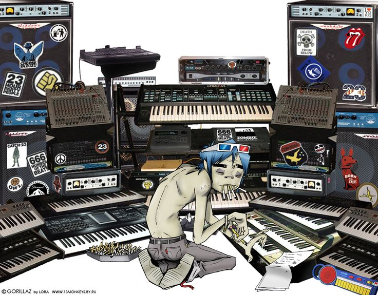

Durante un breve hiatus por parte de la banda, el 3 de septiembre de 2019, mientras visitaba Irán para ver el lago Urmia, Noodle tomó nota de cómo el cambio climático había afectado al lago. Se dio cuenta del estado de la naturaleza en la Tierra y envió una postal a Murdoc, 2-D y Russel en Studio 13 con un mensaje que detallaba su deseo de construir una máquina y ver el mundo antes de que desaparezca. La postal llegó al estudio el 12 de septiembre.
El 7 de septiembre, 2-D envió una postal a la banda mientras visitaba Beirut, informándole a Noodle que había conseguido las piezas para la máquina que ella había mencionado y preguntándole para qué servían. La postal llegó al Studio 13 el 24 de septiembre. El 14 de septiembre, Murdoc envió una postal de sus vacaciones anuales. La postal llegó al Studio el 26 de septiembre.
El 21 de septiembre, Russel envió una postal desde México mientras trabajaba en su negocio de salsa picante, “Hobbs Hot Sauce”. Incluyó un mensaje diciéndole a la banda que los vería a ellos y a la máquina MUY pronto. La postal llegó al Studio 13 el 4 de octubre.
La máquina (revelada como “Song Machine”) se activó el 28 de enero. Al día siguiente, la banda anunció su próximo proyecto, Song Machine, una serie multimedia de canciones y vídeos musicales lanzados episódicamente durante 2020, como una lista de reproducción que se actualiza continuamente a través de servicios de streaming.
En una declaración a la prensa, Russel dijo: “Song Machine es una forma completamente nueva de hacer lo que hacemos. Gorillaz rompe el molde porque el molde ya está viejo. El mundo se mueve más rápido que una partícula sobrealimentada, así que tenemos que estar preparados”. “Ni siquiera sabemos quién será el siguiente en pasar por el estudio. Song Machine se alimenta de lo desconocido, funciona en puro caos. Así que, pase lo que pase, estamos preparados y listos para producir como si no hubiera un mañana.”
Gorillaz fue creado por Damon Albarn, cantante de Blur, Jamie Hewlett, dibujante inglés creador de Tank Girl, y el productor Dan “The Automator” Nakamura. Damon Albarn da voz a 2-D, mientras que el resto de voces pertenecen a muchos otros artistas que colaboran con la banda, los más importantes de los cuales son: Miho Hatori (de Cibo Matto), Tina Weymouth y Chriz Frantz (de Talking Heads), Kid Koala (de Coldcut), Ibrahim Ferrer (integrante del Buenavista Social Club).
